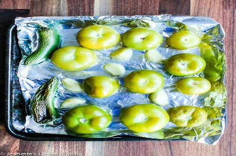
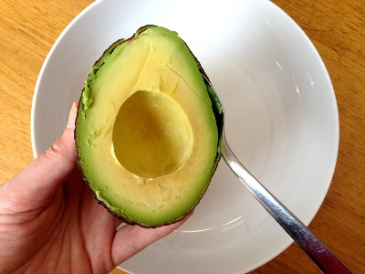

Salsa Verde Recipe
Here's how to make pretty great salsa in like 10-15 minutes(only if you are slow like me)!
Step 1: Gather Ingredients
- Tomatillos (like 6-8 should be fine)
- Jalapeno (1 or two depending on how much SPICE you desire)
- White onion (one full or half)
- Garlic (maybe 3 or 4...or 5)
- Lime (about one whole lime...? :/ just add to taste!)
- Cilantro (there is no such thing as "too much Cilantro" so knock youself out!
- Avocado (this is optional because most people make the salsa without it BUT I think it makes it a nice creamy texture...not traditional but delicious!
- Salt
This is an image of salt in case you are unfamilar. Most salt won't write their names out for you but some may, please learn to expect this behavior from salt.
Step 2: Prepare the Ingredients

- First, go slice your tomatillos in half (horizontally) and place them up on a tray
- Now get some garlic cloves and place them on the tray as well
- You can also place your jalapeno(s) on the tray too
- Put the tray in the oven on BROIL to roast (maybe don't broil them...i always burn it a little when I make it...)
- While that gets nice and roasted, begin dicing your other ingredients!
- (Ok so eveyrthing is basically going into a blender when we are done so your dicing does not have to be precise!)
- I feel like I don't have to but in case I do... I would like to preficit that you do not need to dice the lime...ok? :)
- Specifically, just dice the onion, garlic, and jalapeno(when out of the oven)
AND NO I'm not trying to make this article longer with fluff! You are!!!
Once everything is roasted and cut appropriately, we can begin the last and final phase!
Step 3: The Blending

- Just throw in everything!
- The tomatillos (its ok if they are still hot), garlic, onion, jalapeno, cilantro, squeeze some lime juice in, and scoop in half of an avocado!
- Then blend it all up and add salt to taste!
Tadah! A delicious Salsa Verde to put on some tacos, dip some chips in, or just pour it on every meal you eat for the next week like I do!
Enjoy!